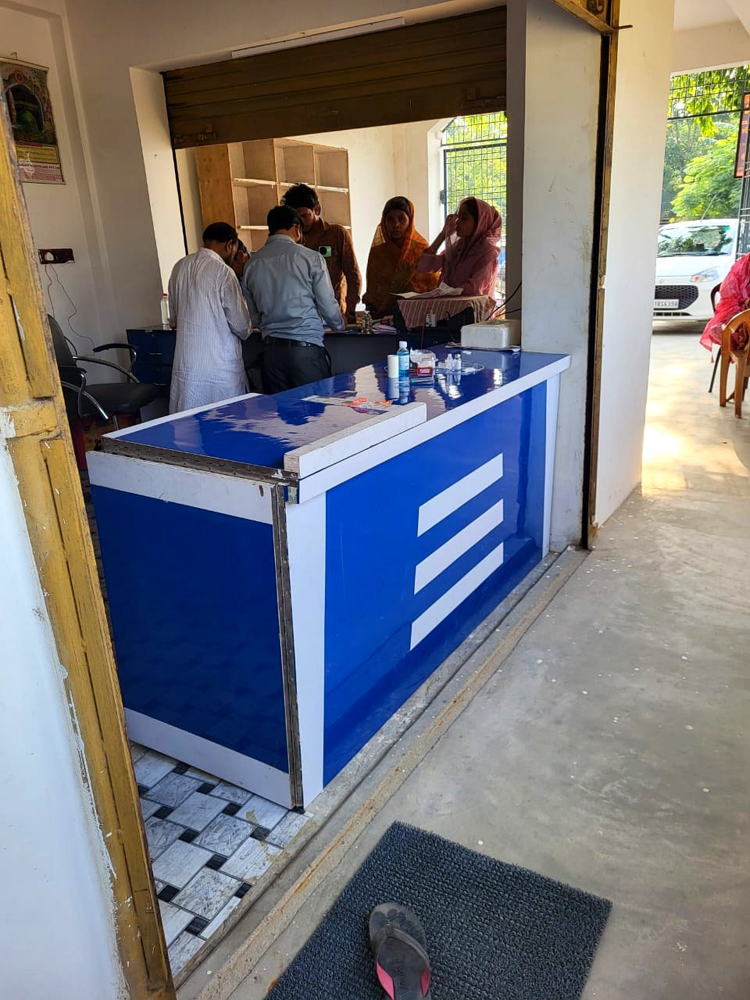
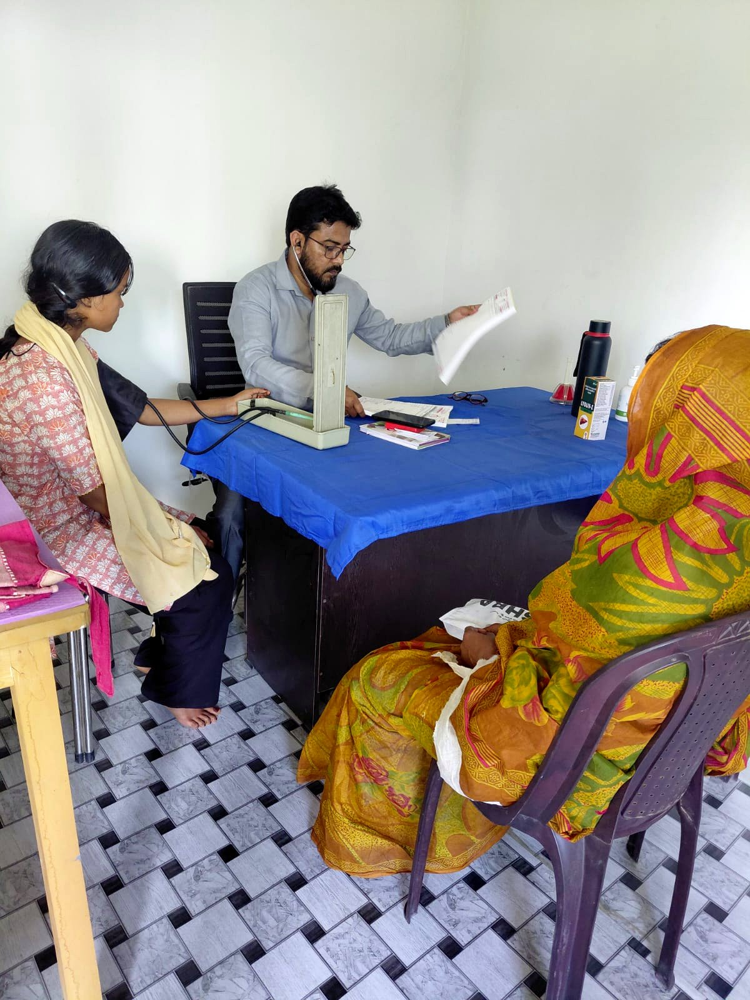
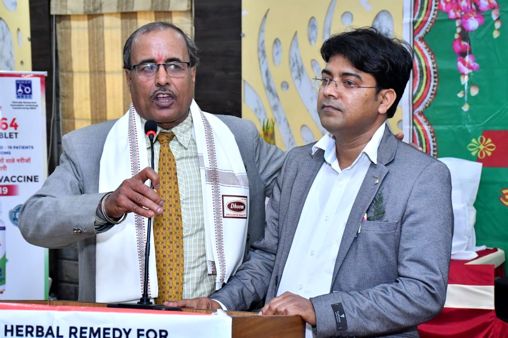

Diabetes Management
How a Diabetes Doctor in Baisi Can Help You Manage Sugar Levels
Managing high blood sugar requires more than just medicine. Dr. Firoz Akhtar explains the role of diet and consistent care in Purnea.
Read Article →
Dr. MD. Firoz Akhtar is the trusted Physician in Purnea District, delivering expert healthcare to families within a 40km radius of Baisi for 15+ years.

Dr. Firoz is a listener first, then a physician. Trained at Jamia Hamdard University and a former consultant to the Union Health Ministry in Delhi, he returned to Seemanchal to serve Baisi, Amour, and the Purnea District.
Trusted by over 20,000 families, he provides accurate diagnosis and affordable treatment. He speaks Hindi, Urdu, Maithili, and Bengali—ensuring every patient from nearby villages feels understood and respected.
Expert Diabetes, BP, and Fever treatment in Baisi. Providing modern diagnostic accuracy for over 15 years.
Explore All Services →Dr. Firoz is an expert Diabetes doctor in Baisi, providing comprehensive management for Type 2 and Type 1 Diabetes.
Accurate BP treatment in Baisi to prevent stroke and heart complications.
Expert fever treatment in Baisi for seasonal flu, viral infections, and chronic Typhoid cases.
Specialized care for metabolic disorders and digestive health in Seemanchal.
A unique blend of traditional Unani wisdom and modern medicine for skin infections, pediatric care, and jaundice.
Modest ₹400 consultation fee ensuring expert care for every family.
National-level medical knowledge brought directly to our local community.
Emergency medical support that never closes its doors to a patient in need.
I started this clinic with a single belief: every family deserves a doctor who listens patiently, diagnoses accurately, and treats affordably. सस्ता और सटीक इलाज — हर परिवार का हक है।
Emergency support available for poisoning cases, accidental trauma, acute fever, and day-to-day illnesses that need immediate attention — any hour, any day.
Every patient who walks through our doors matters. Here are a few who shared their experience.
"Doctor sahab ne meri diabetes ko bahut acche se samjha. Pehle mera sugar level control hi nahi hota تھا — ab regular medicine aur diet se bilkul theek hai. Fees bhi bahut sahi hai, sab afford kar sakte hain."
"Mere bachche ko bahut tez bukhar tha, raat ke 2 baje. Dr. Firoz sahab ne phone pe baat kari aur turant clinic bulaya. Ek baar mein sahi diagnosis ho gayi — do din mein bachcha theek. Bohot caring doctor hain."
"BP ka masla tha kafi time se, bahut jagah gaya. Yahan Dr. Firoz sahab ke paas aaya to seedha, sahi treatment mila. Woh apni bhasha mein samjhate hain — isliye bahut asan lagta hai. Highly recommended."
Patient names changed to initials for privacy.
Walk-in or WhatsApp · ₹400 only · Open 24×7 · Emergency support always available


Expert diagnosis and treatment for everyday illnesses, ensuring your family stays healthy through every season. We combine 15+ years of clinical experience with a patient-first philosophy.
Our chronic disease management protocols are designed for long-term stability. We don't just treat symptoms; we optimize your lifestyle and medication for a complication-free future.
A compassionate, confidential, and medically advanced environment for women's healthcare. From routine PCOS management to high-risk pregnancy monitoring.
Blending the time-tested wisdom of Unani herbal medicine with modern diagnostics. Perfect for chronic skin conditions, liver health, and gentle pediatric care.
Health awareness articles by Dr. MD. Firoz Akhtar — written in simple language to help families in Baisi and Purnea stay healthier, longer.
Managing high blood sugar requires more than just medicine. Dr. Firoz Akhtar explains the role of diet and consistent care in Purnea.
High Blood Pressure is a silent threat in Purnea, Bihar. Learn how Dr. Firoz Akhtar provides accurate BP treatment and lifestyle counselling.
Diabetes, BP, obesity — these are no longer diseases only of the rich. They are spreading rapidly in rural Bihar too. Here's what you can do starting today.
Fatigue and weight changes could be thyroid issues. Dr. Firoz offers specialized Thyroid treatment in Purnea for all ages.
Poor gut health affects energy, immunity and mood. Dr. Firoz shares practical, affordable steps to improve digestion and maintain a healthy stomach naturally.
As a B.U.M.S practitioner, Dr. Firoz explains which herbal remedies are backed by evidence and when you must consult a doctor instead for serious conditions.
Consult Dr. MD. Firoz Akhtar directly for personalized health guidance.
Providing clear, clinical answers to your most common health questions.
We believe in transparent, evidence-based healthcare. Explore our common clinical questions or connect with us for a personalized consultation.
Book your appointment at Seemanchal Clinic directly on WhatsApp — no registration, no hassle. Just one message and your slot is confirmed.
Tap below to open a pre-filled WhatsApp message to Dr. Firoz. Works perfectly on mobile — one tap and you're connected.
Open WhatsApp NowGeneral Physician & Public Health Specialist · 15 years of dedicated community healthcare in Baisi, Purnea, Bihar
Dr. Md. Firoz Akhtar's journey in medicine has always been guided by a deep sense of community service. From advising the Union Health Ministry in New Delhi to training healthcare workers across Bihar, he has impacted thousands of lives at a systemic level.
But his true calling brought him back to Baisi, Purnea. Here, he offers the warmth of a traditional family doctor combined with the sharp diagnostic skills of a public health expert. He believes that every patient has a story, and taking the time to listen to that story is the most important part of healing.